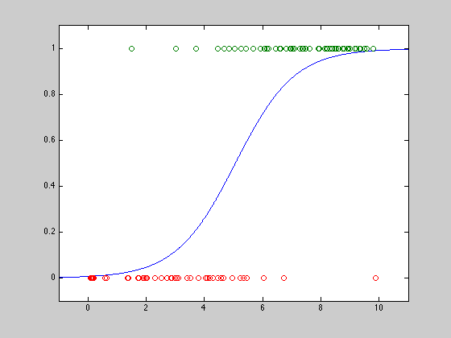

Figure 7.1: Logistic regression (GP version)
randn('state',0);
rand('state',0);
a = 1;
b = -5;
m = 100;
u = 10*rand(m,1);
y = (rand(m,1) < exp(a*u+b)./(1+exp(a*u+b)));
ind_false = find( y == 0 );
ind_true = find( y == 1 );
X = [u(ind_true); u(ind_false)];
X = [X ones(size(u,1),1)];
[m,n] = size(X);
q = length(ind_true);
cvx_begin gp
variables z(n) t(q) s(m)
minimize( prod(t)*prod(s) )
subject to
for k = 1:q
prod( z.^(X(k,:)') ) <= t(k);
end
for k = 1:m
1 + prod( z.^(-X(k,:)') ) <= s(k);
end
cvx_end
theta = log(z);
aml = -theta(1);
bml = -theta(2);
us = linspace(-1,11,1000)';
ps = exp(aml*us + bml)./(1+exp(aml*us+bml));
plot(us,ps,'-', u(ind_true),y(ind_true),'o', ...
u(ind_false),y(ind_false),'o');
axis([-1, 11,-0.1,1.1]);
Calling SeDuMi: 1955 variables (2 free), 1000 equality constraints
------------------------------------------------------------------------
SeDuMi 1.1 by AdvOL, 2005 and Jos F. Sturm, 1998, 2001-2003.
Alg = 2: xz-corrector, Adaptive Step-Differentiation, theta = 0.250, beta = 0.500
Split 2 free variables
eqs m = 1000, order n = 958, dim = 2958, blocks = 101
nnz(A) = 2300 + 400, nnz(ADA) = 7200, nnz(L) = 4100
Handling 4 + 0 dense columns.
it : b*y gap delta rate t/tP* t/tD* feas cg cg prec
0 : 6.62E+000 0.000
1 : 1.74E+003 1.35E+000 0.000 0.2041 0.9000 0.9000 4.86 1 1 4.6E-001
2 : 5.51E+002 3.27E-001 0.000 0.2420 0.9000 0.9000 1.57 1 1 8.5E-002
3 : 2.31E+002 8.93E-002 0.000 0.2732 0.9000 0.9000 1.42 1 1 1.9E-002
4 : 1.20E+002 3.19E-002 0.000 0.3569 0.9000 0.9000 1.26 1 1 6.1E-003
5 : 6.40E+001 1.13E-002 0.000 0.3537 0.9000 0.9000 1.12 1 1 2.0E-003
6 : 4.40E+001 3.77E-003 0.000 0.3345 0.9000 0.9000 1.19 1 1 6.2E-004
7 : 3.67E+001 1.30E-003 0.000 0.3450 0.9000 0.9000 1.21 1 1 3.0E-004
8 : 3.44E+001 5.25E-004 0.000 0.4037 0.9000 0.9000 1.14 1 1 1.5E-004
9 : 3.34E+001 1.47E-004 0.000 0.2807 0.9000 0.9000 1.11 1 1 4.3E-005
10 : 3.31E+001 4.12E-005 0.000 0.2793 0.9000 0.9000 1.07 1 1 1.3E-005
11 : 3.30E+001 9.40E-006 0.000 0.2282 0.9000 0.9000 1.07 1 1 2.9E-006
12 : 3.30E+001 7.37E-007 0.000 0.0784 0.9900 0.9900 1.06 1 1 2.4E-007
13 : 3.30E+001 6.35E-008 0.321 0.0862 0.9900 0.9900 1.02 1 1 2.0E-008
14 : 3.30E+001 2.49E-013 0.409 0.0000 0.9000 0.0000 1.00 2 2 5.3E-009
iter seconds digits c*x b*y
14 1.3 Inf 3.3016843455e+001 3.3016968909e+001
|Ax-b| = 3.0e-008, [Ay-c]_+ = 7.2E-007, |x|= 3.5e+001, |y|= 2.4e+001
Detailed timing (sec)
Pre IPM Post
4.006E-002 1.342E+000 1.001E-002
Max-norms: ||b||=3.646025e+000, ||c|| = 3.850194e+002,
Cholesky |add|=0, |skip| = 0, ||L.L|| = 336.543.
------------------------------------------------------------------------
Status: Solved
Optimal value (cvx_optval): +2.1829e+014
